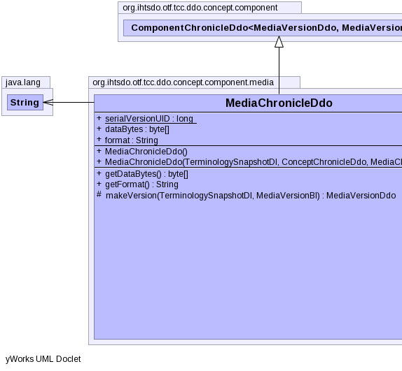
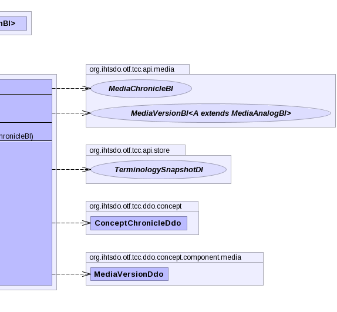
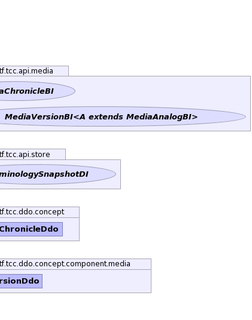

public class MediaChronicleDdo extends ComponentChronicleDdo<MediaVersionDdo,MediaVersionBI>
|  |  |  |
| Modifier and Type | Field and Description |
|---|---|
byte[] |
dataBytes |
String |
format |
static long |
serialVersionUID |
additionalIds, concept, refexes| Constructor and Description |
|---|
MediaChronicleDdo() |
MediaChronicleDdo(TerminologySnapshotDI ss,
ConceptChronicleDdo concept,
MediaChronicleBI another) |
| Modifier and Type | Method and Description |
|---|---|
byte[] |
getDataBytes() |
String |
getFormat() |
protected MediaVersionDdo |
makeVersion(TerminologySnapshotDI ss,
MediaVersionBI version) |
beforeUnmarshal, equals, getAdditionalIds, getComponentNid, getConcept, getIdCount, getPrimordialComponentUuid, getRefexes, getUuids, getVersionCount, getVersions, hashCode, setAdditionalIds, setComponentNid, setPrimordialComponentUuid, setRefexes, setVersions, toStringpublic static final long serialVersionUID
public byte[] dataBytes
public String format
public MediaChronicleDdo()
public MediaChronicleDdo(TerminologySnapshotDI ss, ConceptChronicleDdo concept, MediaChronicleBI another) throws IOException, ContradictionException
IOExceptionContradictionExceptionpublic byte[] getDataBytes()
public String getFormat()
protected MediaVersionDdo makeVersion(TerminologySnapshotDI ss, MediaVersionBI version) throws IOException, ContradictionException
makeVersion in class ComponentChronicleDdo<MediaVersionDdo,MediaVersionBI>IOExceptionContradictionExceptionCopyright © 2013 International Health Terminology Standards Development Organisation. All rights reserved.